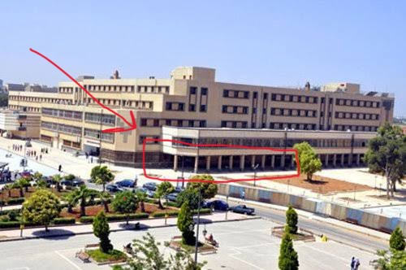

< MEETING_POINT_&_RULES />
مكان التجمع وإرشادات الحضور
تجدون أدناه تفاصيل نقطة التجمع الرئيسية، صور المكان، وتسلسل الإجراءات والتعليمات.
نقطة التجمع الرئيسية
الساحة المركزية - بين كليتي الهندسة
سيكون التجمع والاستقبال في الساحة الرئيسية الخارجية الممتدة بجانب كلية الهمك (الهندسة البترولية والكيميائية). يتواجد فريق التنظيم عند منصة الاستقبال لإرشادكم ومرافقتكم إلى قاعات المناقشة.
الساحة المركزية

مكان التجمع
خطوات وإجراءات يوم المناقشة
01
الوصول والتجمع
الوصول لنقطة التجمع في الساحة الرئيسية الساعة 08:30 صباحاً.
02
الاستقبال والإرشاد
التوجه لفريق التنظيم للترحاب بكم وتوجيهكم للمقاعد.
03
المناقشة
الدخول لقاعات المناقشة المحددة.
التعليمات والتنبيهات العامة
الالتزام بالوقت:
يرجى التواجد في مكان التجمع قبل بدء المناقشات بوقت كافٍ لضمان تنظيم الجلوس.
وضعية الصامت:
يرجى ضبط الهواتف المحمولة على الوضع الصامت أثناء عرض المشاريع وتقييم اللجنة.
سياسة الأطفال:
نكرر اعتذارنا اللطيف عن استقبال الأطفال لضمان الهدوء التام للطلاب ولجنة التحكيم.
التصوير والتهنئة:
مخصص وقت كامل لالتقاط الصور التذكارية والتهنئة فور انتهاء جلسات المناقشة.